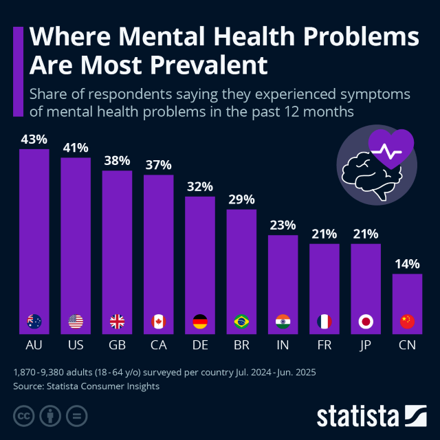
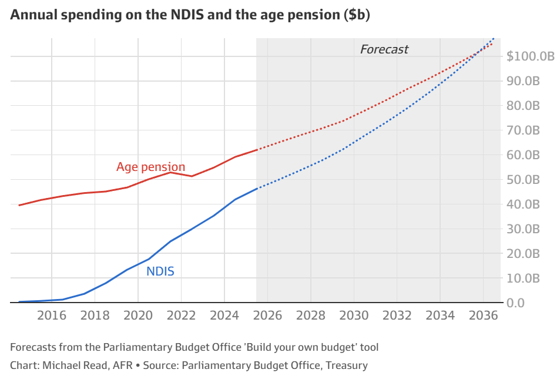
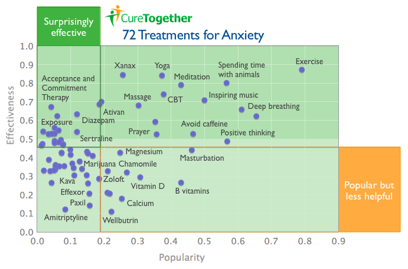

No-one really knows the most cost-effective treatments for mental ill-health. But among the most promising options right now: take the dog for a walk.
Illustration: A cost-effective mental resource takes a break from promoting healthy exercise and lifting spirits ... Meet Otis.
Key points
- Finding cost-effective solutions for widespread mental ill-health poses a major policy challenge, as many current treatments are expensive or have limited reach and efficacy.
- It's not even clear how severe or durable Australia's mental health problem is, due to measurement challenges.
- In the absence of well-proven formulas for mental well-being, the most widely accessible and lowest cost fixes available right now may be therapies like taking a dog for a regular walk.
Over the past couple of years or so I've read for the first time a bunch of research into the economics of mental health, along with a little on the early history of psychotherapy. It isn't pretty.
Mental health is, undeniably, a big problem in modern societies – and on some published figures, in Australia more than anywhere else. The biggest problems arise, not very surprisingly, in people's teenage years; if not fixed then, they can blight people's entire lives. As social scientists (including economists) keep pointing out, fixing mental health would raise people's happiness, capabilities and their use of their potential.
And a lot of the problem is not mental illness, but what might be described as mental ill-health. Problems like depression and anxiety are not as severe as, say, schizophrenia, but they are much more widespread. While they don't stop you from functioning in society, they certainly affect quality of life. And most experts reckon they're getting worse.
Mental ill-health's measurement problem
But how much is mental ill-health worsening? We just don't really know for sure, as far as I can see.
When they do look at this question, social scientists tend to argue they are controlling for the obvious survey problems. I'm not convinced. Much of our picture of mental health problems comes from surveys of some subset of the population. Over time, people as a group have become less willing to answer surveys; just ask political pollsters.
At the same time, people in "Anglo" cultures do seem to have become much more willing to talk about their mental health. A century ago, according to some historians, conversations about mental problems were virtually taboo among males; even 30 years ago, the topic embarrassed many people who would be much more open on it today. Now that taboo is dwindling fast.
And note that in this field we rely mostly on attempts to measure people's perceptions – an inherently fraught task, because people's perceptions are so deeply affected by the changing discourses of the society around them. The sadness of the 1950s has in some cases become the depression of the 2000s. But we don't know how big this effect is.
I'm unconvinced by the social scientists who say their methodologies mean we shouldn't have measurement problems. We quite literally don't know what's really going on in people's heads. So our time series data on the state of mental health, both in Australia and everywhere else, may well be unreliable.
As an illustration, take ...
... the probably terrible graph below, from an outfit called Statista. This gang frequently takes ill-normalised data points and pretends they are all measuring the same thing. Statista labels this specific graph "Where Mental Health Problems Are Most Prevalent", but that seems to be their run-of-the-mill BS. I take the graph mostly as charting different populations' willingness to self-report about their mental health issues, large and small. (The amusing thing is that down in the body of the accompanying story, Statista also admits that their graph title is almost certainly nonsense.) I suspect that the difference between mental ill-health in Australia and, say, Japan is way lower than this graph suggests.

The point here is that the graph purports to tell us the actual prevalence of mental ill-health, but in reality probably just tells us how much people in different countries are willing to disclose to researchers. In other words, we confront a measurement problem.
And this measurement problem raises its head again as soon as we discuss the economics of mental ill-health.
Mental ill-health's economics problem
So mental ill-health is some sort of problem, with its size uncertain. Now, how well can we make mental ill-health respond to treatment?
We have some data on that, but it has a lot of holes too. Indeed, mental health economics is quite unlike many other health fields.
- First, assessment of mental health has a problem that it shares with issues like sexual violence: over time, society is becoming more willing to talk about it. This seems a very, very good thing. But as a byproduct, it messes up attempts to assess the effectiveness of our remedies. The change in rates of mental illness over time seems, at this point, hard to measure.
- Secondly, huge amounts of high-quality investment can bring almost no measured improvement for individual subjects – and that can be either because it doesn't work, or because we assess it badly. When we add that to the measurement problem described above, it seems only fair to say that the benefits of mental health spending are hard to assess.
- Thirdly, free-market solutions – our best solution in so many areas – are less clearly useful in the mental health arena, because the beneficiaries of the service are not necessarily in the best state to evaluate what they are getting. In other words, consumer evaluation of mental health treatment is unreliable.
(Consumer evaluation is a problem for health generally. But compared to many other health fields, the connection between health inputs and outcomes in mental health seems not just weaker, but almost of a different character.) - And on top of all that, the best treatments seem often to involve not a new technology or a policy change, but the constant presence of a person. And not only are people expensive, but they generally don't get cheaper: as you make everyone better off, service workers demand higher wages. (Economists know this problem as "Baumol's cost disease".) So mental health treatment is enduringly high-cost.
To recap: in general, changes in mental health are hard to measure, benefits from government spending on treatment are hard to assess, consumer judgment of its effectiveness is unreliable, and treatments are expensive.
One result is that when governments seek to boost mental health, costs seem like to explode without results improving. And indeed, this is just what has happened in Australia, which now has the ongoing cost-explosion field experiment that we call the National Disability Insurance Scheme (NDIS): 
But there's worse. Mental health policy is also a recipe for a sort of creeping doomerism – because even if we are making things better, the special characteristics of mental health mean we will very possibly still think we're making things worse. This, too, may now be happening in Australia.
Now, keeping all that in mind, let's look at what the mental health economics research says.
There is quite a lot of literature saying two things about mental ill-health:
- It's expensive.
- The problems (and thus the costs) are rising.
So now we look at the research on the core issue – improving mental health best for the lowest cost. And we find ...
A surprising lack of economic insight
Amazingly, this whole field of improving mental health looks almost empty. We really know startlingly little about reducing mental ill-health at lowest cost.
We don't even know much about reducing mental ill-health at very high cost. Many mental health professionals are really loathe to talk about the fact that so many mental health treatments are expensive, and those same medical professionals seem really inexperienced at doing it when they try.
I'm guessing that maybe some feel the shadow of Sigmund Freud. The father of psychoanalysis never discussed cost-effectiveness, because:
- he had a family of 12 to feed, and
- he had hit on the wonderful business model of charging the Viennese upper class eye-watering hourly rates for appointments several times a week, often for years.
Psychoanalysis works very well for a lot of analysts; Freud and many successors grew rich. The evidence suggests, however, that it doesn't work very much for the person on the other end, the analysand. (On this point, see Nick Gruen's discussion with Seamus O'Mahony.)
And the evidence for more affordable treatments is mostly not great either.
The rather horrifying reality is that even today, as mental health spending appears to most people to be exploding in many parts of the developed world, not a lot of research is being done to nail down just how public mental health spending can do more good at the least cost. Indeed, it seems hard to get most policy analysts to focus on the economic challenges at all.
The leading paper in this area seems to be “Economics and mental health: the current scenario”, published in World Psychiatry in 2020 by a pair of researchers named Martin Knapp and Gloria Wong. It is well worth your time if you want to know pretty much everything that is known about the hard questions in the economics of mental health.
The first good piece of news from Knapp and Wong is that the mental health profession's 20th-century tendency to dismiss discussions of cost seems to have fallen somewhat in the 21st century.
The second piece of good news is that we have some good ideas about cost-effective treatment – even though when you dig, there seems to be a lot of work yet to do. In the paper linked above, Knapp and Wong list the areas where evidence is getting better: “perinatal depression identification-plus-treatment; risk-reduction of mental health problems in childhood and adolescence; scaling up treatment, particularly psychotherapy, for depression; community-based early intervention and employment support for psychosis; and cognitive stimulation and multicomponent carer interventions for dementia.”
But that listing above includes only a minority of mental health's subfields.
And the bad news is that we still don't evaluate most mental health programs’ societal benefits (or lack of them) very well – in part because this task, too, is super-complicated. Worst of all, we face what Knapp and Wong call a “diagonal accounting” challenge: one government body has to spend money to save cash in the budget of some other body, perhaps in a different level of government, probably 20 years in the future.
That seems like a recipe for not getting the problem solved.
The canophilic solution
We could leave mental health there, because the formal studies don't say a lot more. But in such an under-developed field, it seems, well, not crazy to move on from government policy and formal medical practice to look at the remedies which people say are working for them.
And after looking at that literature for a while, my primary piece of advice for any government wanting to improve low-level mental health problems would be: try a dog-walking campaign.
Similarly, my advice to anyone feeling like they're often anxious would be: "Have you tried walking a dog for at least half an hour a day?"
Actually – and unlike mental health cost control more generally – the mental health effects of dog-walking have been studied pretty heavily. (It's possible that mental health researchers prefer studying dogs to the other available fields of investigation.)
The dog-walking studies are amazingly positive. They even have cheery academic titles like "I Walk My Dog Because It Makes Me Happy: A Qualitative Study to Understand Why Dogs Motivate Walking and Improved Health" (International Journal of Environmental Research and Public Health, 2017). I do not believe all of these studies were done at all well; epistemic standards in the mental health field seem not obviously better than in many other areas of social science. But they are certainly consistent.
Meanwhile, as the psychiatrist and famed blogger Scott Alexander neatly puts it: "Pretty much every study – epidemiological or experimental, short-term or long-term – has shown that exercise decreases anxiety".
Even accounting for the kibble-and-bones bills and the vet expenses of a 40-kilo ridgeback cross, walking old Otis (pictured above) is starting to look like a very cost-effective health investment.
(Side-note: I thought I had made up the word canophilic, meaning love of dogs. Heh. Turns out it's right there in the dictionary.)
What users (might) think
We can look at one or two less academic sources as well.
For instance, way back in the Old Times, around 2011, there lived a website called Cure Together. Its aim was to bring people together to figure out how they could treat and even cure their illnesses. It didn't run controlled experiments, but it did attract a group of people who seem to have bought into the idea of using and recording data.
These days, that sort of site would probably be a disaster. But Cure Together seems to have been one of the last gasps of that early, more innocent and wholesome Web, where a bunch of data nerds got together and did useful things.
Before it got bought and killed by (the now-bankrupt!) 23andMe, Cure Together produced some interesting-looking information. Among that information was the graphic below, which charts anxiety treatments. (Thanks to the Wayback Machine.) Cure Together claimed to have analysed three years of site responses from its users, for a total of 6118 people. (And no, as far as I can tell they never published their base data or even further information on what the unlabelled dots were.)
Essentially, the chart below records the stuff that a lot of people reported helped their anxiety – a classic low-level mental health problem. The stuff reported as most effective is at the top of the chart.

The list below is what the site's authors called at the time "the top 25 treatments for anxiety you may not have tried that thousands of others say worked well for them". As far as I can tell, it's the anxiety treatments ranked by user-scored effectiveness:
1. Exercise
2. Xanax
3. Yoga
4. Spending time with animals
5. Meditation
6. Cognitive Behavioral Therapy (CBT)
7. Inspiring music
8. Ativan
9. Clonazepam
10. Massage therapy
11. Acceptance and Commitment Therapy (ACT)
12. Deep breathing
13. Diazepam
14. Exposure therapy
15. Relaxation
16. Psychotherapy
17. Eye movement desensitization and reprocessing (EMDR)
18. Interpersonal therapy
19. Osteopathy
20. Zoloft
21. Lamictal
22. Bio-identical hormone treatment
23. Avoid caffeine
24. Dialectical Behavior Therapy (DBT)
25. Prayer
This is an interesting mix of drugs (mostly benzodiazepines), therapies and, most prominently, a lot of the sort of stuff your dad might recommend.
After looking at this list, you may still have a lot of work to do to find a treatment that works. CBT comes in at position 6, and has been pretty heavily investigated; meta-studies suggest that as treatment for major depressive disorders it may have an 'acceptable incremental cost-utility ratio', which is kind of faint praise. Benzodiazepines like Xanax at position 2 and Ativan at position 8 (plus Clonazepam, Diazepam and many others) pack a swag of adverse effects. Things get worse from there, with osteopathy and bio-identical hormone treatment. (Prayer, at number 25, is at least a form of self-talk, which has some likely therapeutic benefits.)
This ain't science: walk the damn dog
After all that ... If you want a quick solution to mild anxiety – or just want to feel a little more safely protected from potential future anxiety – you might do worse than look up right up the top of the CureTogether anxiety treatment list. What do you see? Exercise. Spending time with animals. Listening to music. Meditation. Breathing deep.
Which brings us back to the same remedy in all those cheery scientific-ish papers: walk the damn dog. And maybe take your headphones. Perhaps it'll work; perhaps it won't. But even at its worst, the side-effects will be moderately good for you – and very good for the dog.
Now, Dr Troppo is not telling you to do this. Dr Troppo is not only not a doctor; he's not a doctor's bootlace. If you are frequently anxious or depressed for long periods, for instance, you should talk to a real doctor. A real doctor can give you a preliminary diagnosis and talk through what further treatment you might want. (You can start here.)
Also, the old CureTogether data ain't science. No, really: there are many possible reasons that "stuff your dad might recommend" would rank high on that CureTogether chart – and "your dad really understands the world" is, at the very best, only one of those possibilities. "Long walks in the woods" was the doctors' prime recommendation to German general Erich Ludendorff when he suffered a mental collapse near the end of World War I, and it didn't do much for him.
But as a dad, let me tell you: walking Otis is doing pretty well for me.
Comments: As usual, yes, I’m an idiot about a lot of things. I really will be grateful if you can point out in the comments specifically where my idiocy lies, and detail the huge mistake(s) I’m making.
 About the author: David Walker (right) is the business editor at Mahlab, a content and publishing firm, and principal of Shorewalker DMS, an editorial advisory firm.
About the author: David Walker (right) is the business editor at Mahlab, a content and publishing firm, and principal of Shorewalker DMS, an editorial advisory firm.
Shorewalker DMS specialises in helping organisations make their reports clearer , more complete and more persuasive. See its work and check out its podcasts at: https://shorewalker.net.
Twitter: @shorewalker1
From afar, my impression has always been that the biggest problem with psychology is thinking that you can solve thinking problems with thinking. And from what I can tell, non-thinking solutions work best: improved diet, better routines, exercise, better sleep and walking the dog.
When Gestapo agents came to Freud’s home and confiscated 6,000 schillings, Freud reportedly said,
There's also the question of the extent to which poor mental health is not an individual trait, not in the sense that individuals don't suffer it, but in the sense of what causes it. That's why I think of programs like Family by Family and I wish I'd asked as mental health programs. Also, like the What Works centres in the UK, the research you've reported on asks 'what works', not who made it work. Of course, if we find correlations against what works, well and good. But it's also very probable I think, that some practitioners will perform well and others won't (and what they perform well, might not be psychotherapy. It might be football coaching, or community building.) As the remarkably productive writer and AI entrepreneur Dan Shipper put it last week in "Seeing Science Like a Language Model":
I expect David will regard this as an overstatement and perhaps he's right, but hopefully you accept the point to some extent.
Great post David! Is there any reliable data on MH rates across the generations? You describe the difficulties of measurement. So probably the answer is no. But we have all heard our grandmothers say: “back in my day nobody had time to be depressed. We were too busy fighting Hitler.” Psychiatrist claim they are diagnosing something when they say you are manic-depressive or narcissistic. Is there a coherent definition of mental health that is not just based on a survey score? Is the most powerful guy on the planet (you-know-who) mentally healthy? I am sceptical of the whole psychiatric profession (as I think are you). In other contexts, modern medical professionals would say "we are all different and cannot be categorised on a spectrum, let alone a binary categorisation". But if you need to check a box for the insurance companies….. People who think they are trapped in the wrong body and want to change their sex cannot be called mentally ill in polite society (even though GD is listed as a mental illness in DSM5) but people who are depressed because they are estranged from their family, have no job prospects and cannot get a romantic partner because they are ugly as sin are apparently mentally ill. Or are they just reacting rationally to the alienation of modern life? You mention that willingness to talk about MH or DV is a good thing. There is a sweet spot surely. Only within reason. It can feed on itself and lead to thoughtless policy outomes and I would say that MH and DV are both good examples. Talking about immigrants not assimilating might be OK in principle and in moderation but can easily get out of hand. Pretty soon you have March for Australia and Sovereign Citizens. An upside of dog-walking is that it makes the dog even happier than the human! We are not exploiting the dog at all. I read some convincing studies about 10 year back that showed (from measuring joy hormones in the bodies of human and dog) that dogs get more pleasure out of humans than humans do out of dogs – and we get a lot! The downside is that they were bred for 100 generations to just love humans. Puppies that did not wag their tails immediately were drowned. Dark. But the upside is that now they think we humans are just the cutest creatures in creation.
Yep. I suspect that Antonios, you and I all share a useful perspective here: the most reliable remedy for dark thoughts is not more thoughts; it's different experiences, including physical experiences.